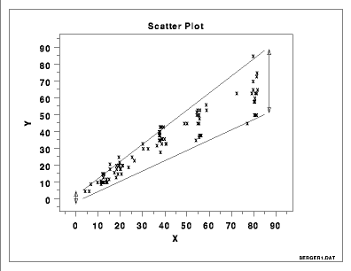

|
1. Exploratory Data Analysis 1.3. EDA Techniques 1.3.3. Graphical Techniques: Alphabetic 1.3.3.25. Scatter Plot 1.3.3.25.9. Scatter Plot: Variation of Y Does Depend on X (heteroscedastic) |
|
|
 |
|
|
This scatter plot reveals an approximate linear relationship
between X and Y, but more importantly, it reveals
a statistical condition referred to as "heteroscedasticity"
(that is, "different variation").
For a heteroscedastic data set, the vertical variation in
Y differs depending on the value of X. In this example,
small values of X yield small scatter in Y while large
values of X result in large scatter in Y.
Heteroscasticity is serious-- its existence invalidates the usual estimates that result from regression (because regression code assumes all of the Y-data are equally precise, and clearly that is not the case here--values of Y for large X are much less precise). If heteroscedastic, then avoid the usual regression estimates and replace them with 1) weighted regression (with noisier data being weighted less); or 2) Y-variable transformation (to achieve homoscasticity (= "one variation") in the transformed variable). For details, see chapter 3. |
|